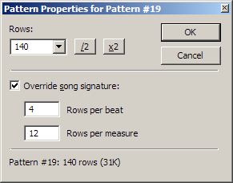

OpenMPT 1.19 - Release Notes
OpenMPT 1.19 - Release Notes
OpenMPT has introduced a number of noteworthy new features since the last official release (version 1.18.03.00).
This document should give a rough overview about the greatest changes in OpenMPT 1.19.
What's new?
General
- OpenMPT comes with an automated update check again, which can notify you of new program versions.
- Based on an undocumented feature in Impulse Tracker, OpenMPT can now save an edit history in IT and MPTM files, which reveals when and for how long a module has been edited in the tracker.
- When exporting to WAV, cue points are now inserted at every pattern transition.
- The last remaining absolute paths in the settings files have been removed; OpenMPT is now fully portable!
- The instrument list on the comments tab also shows assigned plugins now.
- New keyboard shortcuts: Panic, View Edit History, Set Invalid / Ignore Pattern (in the orderlist), Select beat / measure (pattern editor), Quick fade (sample editor)
- Changes to keymap file handling: The active keymap is now always saved to Keybindings.mkb. Any other keymaps are now only overwritten when using the "Save keys as" function.
- When using the ACM MP3 codec, 320kbit/s bitrate should now be available.
Pattern Editor

- Channels can be moved by dragging the channel headers.
- Per-pattern time signatures allow to override the global time signature. This is especially useful in modern tempo mode if you want to use several time signatures in the same song, or if you just temporarily need more detail in a pattern.
- You can now select whole rows by clicking / dragging the row index on the left side of the pattern.
- There are new shortcuts for selecting a whole beat or measure.
- The search feature has been extended to allow for searching in pattern selections.
- Furthermore, the usability of the Find / Replace dialog has been improved: Corresponding checkboxes are now automatically ticked when the value of a dropdown box has been changed. "Replace All" no longer creates an undo point for every replaced command.
- It is now possible to play the whole pattern row when entering notes and chords into the pattern editor. This behaviour can be enabled from the setup screen.
- The context menu has been restructured slightly to contain all advanced paste modes in a sub menu.
Sample Editor / Instrument Editor
- The sample grid can be used to create equally-sized sample selections.
- You can now create seamless loop transitations using the sample loop crossfader.
- There is a new context menu item for quickly fading in the sample start or fading out the sample end.
- Ctrl + Mouse Wheel can now be used to zoom into samples and envelopes.
Compatibility
- Sample auto-vibrato in IT files sounds a lot closer to Impulse Tracker's implementation now.
- IT files not saved using compatibility export can now finally be opened in Impulse Tracker again.
- The new compatible mix mode should be used when composing music in the XM and IT format (it is automatically used when working with MOD and S3M, and it is enabled when creating new XM and IT files). It uses the same volume levels and panning settings as Schism Tracker and should therefore allow for easier interchange of tracked tunes between various trackers.
- The MOD loader has been extended with heuristic detection methods for files with 7-bit panning, VBlank MODs and MODs made with ProTracker 1.x.
- Most MPT Hacks in modules can now be found through View → Find MPT Hacks in Song.
- As always, countless other playback compatibility fixes have made it into this version of OpenMPT.
VST Plugins
- Much improved compatibility with many VST 2.4 plugins! Examples of plugins that work better in this version: Voxengo SPAN 2, Angelina, EnergyXT, MetroGnome.
- It is even easier to create multiple mod instruments from a plugin now: Simply choose "Create instrument from plugin" from the plugin editor's "File" menu.
There's more...
For a detailed description of what has changed, check History.txt.
Known Issues
This list has mostly been copied over from the old OpenMPT 1.17 RC2 release notes, so this not very comprehensive... :-)
- Far from perfect VST support (no buses for routing, no MIDI routing, only a few tracker effects are supported, etc...)
- Some controls vanish randomly all the time, most notably under Windows Vista and Windows 7.
- Previewing samples from the treeview's file browser stops the playing module.
- Cannot preview instruments directly from the MIDI library in the treeview.
- Excessive performance drop when dragging over the graphical parameter editor during playback.
- The Right Alt (or Alt Gr) key is not handled well by the keyboard configuration.
- In Windows 98, the graphical parameter editor and instrument envelope editor grid display are messed up.
- There is no really convenient way to find out what features of the tracker are supported by the original trackers (Impulse Tracker, Fasttracker 2, etc...) when working with those file formats...
Contact
Helpful bug reports, new ideas and brave volunteers to test early development builds or contribute to the code are more than welcome!
Our issue tracker is located at http://bugs.openmpt.org/ and can be used to report bugs and feature requests.
You can also meet us at the ModPlug Central forums: http://forum.openmpt.org/.
{kind=link}